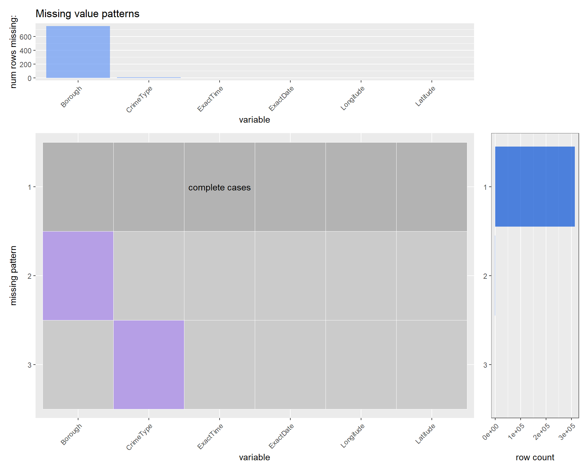
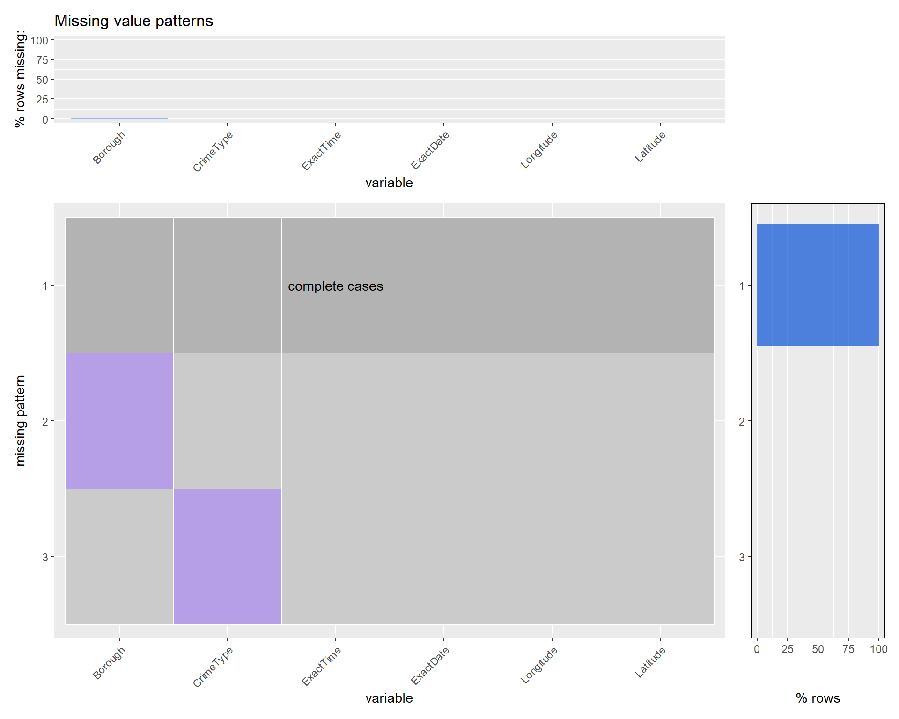
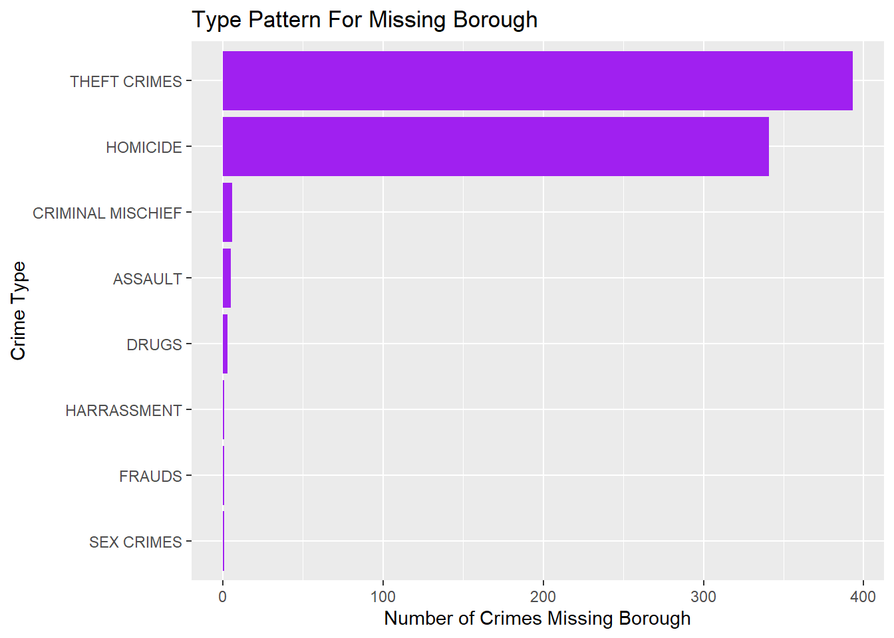
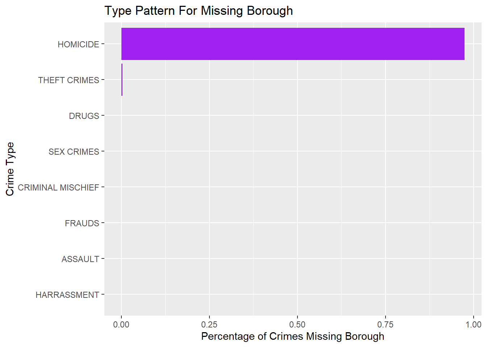

Chapter 4 Missing values
Missing pattern Plot for NYC crime data, both count and percentage plots:


In the missing pattern plot, there are only two missing patterns:
1, missing Borough
2, missing Crime Category
We can see that most of the cases are complete in this dataset, so all rows have missing values.
It can be observed from the top graph that 800 rows are missing Borough, and very few rous are missing Crime Category. However given the vast amount of crimes we can see that they are barely visible in the percentage plot
Also from the right part of the graph, almost 100% of rows are complete cases which have no missing values.
Since there are too few missing cases for Category, there is no need to analyse pattern for it.
Since there are still a few hundred cases with missing Borough, we can do some analysis on them


By the count plot, we can see that the major crime types missing borough are theft and homicide.
By the percentage plot, We can see that over 90% of Homicide Crimes are missing borough information. This might because of the transportation of body, or that no borough wants to be record these vicious incidents so they just left it blank.
So when doing analysis, we should avoid discussing the correlation between homicide and borough since most cases are missing this piece of information.
For other categories, given such small percentage of missing cases, we can just ignore the missing cases and do analysis as usual.